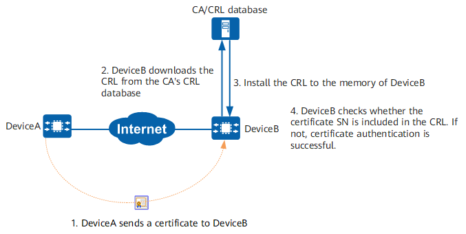
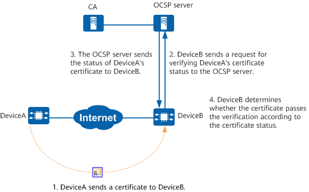

Configuring Certificate Revocation Status Check
Context
During an attempt to establish a secure connection between two PKI entities, the two entities must check each other's local certificate. If the certificate is invalid, a secure connection cannot be established. However, the CA sometimes needs to unbind a public key from related PKI entities due to factors such as user name change, private key leak, or service interruption. A PKI entity must obtain the certificate status of the peer entity in a timely manner to ensure communication security.
The device provides the following certificate status check modes: CRL, OCSP, and None.
If multiple methods are configured, the system checks the certificate revocation status in the configured sequence. The latter mode is used only when the current mode is unavailable (for example, the server cannot be connected). When the configured CRL or OCSP mode is unavailable and None is configured, the certificate is considered valid. For example, if the certificate-check crl ocsp none command is configured, the device checks whether a certificate is valid using the CRL mode. If the CRL mode is unavailable, the device then uses the OCSP mode. If both modes are unavailable, the device considers the certificate valid.
You can select a mode for checking the certificate revocation status as required.
CRL
The status of a certificate is determined by checking whether the certificate is included in the CRL that is saved in the CRL database. After a certificate is revoked, the SN of the certificate is recorded in the CRL. When a PKI entity authenticates the local certificate of the peer entity, it searches for the certificate in the CRL stored in local memory. If the certificate is included in the CRL, it indicates that the certificate has been revoked. If no CRL is available in local memory, the CRL needs to be downloaded and installed into the local memory.
Figure 1 Certificate status check in the CRL mode

A PKI entity can download a CRL using an LDAPv3 template. A PKI entity must frequently download the CRL to keep it up to date. By default, the device allocates about 5 KB memory space for processing and caching the CRL. If the reserved memory space is insufficient, new certificate revocation data cannot be imported. If you want to import new certificate revocation data, delete the old data first.
OCSP
When two PKI entities use certificates to perform IPsec negotiation, they can check the peer certificate status through OCSP in real time. OCSP does not require the PKI entity to frequently download the CRL so as to keep the CRL up to date. When a PKI entity accesses an OCSP server, the entity requests the certificate status. The OCSP server replies with a valid, expired, or unknown state.
Valid indicates that the certificate has not been revoked.
Expired indicates that the certificate has been revoked.
Unknown indicates that the OCSP server cannot determine the requested certificate status.
Currently, the OCSP mode can be used only in IPsec scenarios.
Figure 2 Certificate status check in the OCSP mode
None
If no CRL or OCSP server is available for the PKI entity, or the local certificate status of the PKI entity does not need to be checked, you can use the None mode, which does not check whether the certificate is revoked.
The global certificate revocation status can be checked in CRL mode or None mode.
The certificate revocation status in a PKI realm can be checked in CRL, OCSP, or None mode.
Procedure
- Enter the system view.
system-view - Create a PKI realm and enter its view, or enter the view of an existing PKI realm.
pki realm realm-name
By default, the system has a PKI realm named default. This realm can be modified but cannot be deleted.
- Configure the mode of checking certificate revocation status in the PKI realm.
certificate-check { { crl | ocsp } * [ none ] | none }
By default, the mode of checking certificate revocation status is not configured in a PKI realm.
If this command is not configured, the global certificate revocation status check mode is used. That is, the configuration of the pki certificate-check crl [ none ], pki certificate-check none, or undo pki certificate-check command in the system view takes effect.
- Select a mode to check peer certificate status according to the service types provided by the CA:
Automatic CRL Update
Return to the system view.
quit- Configure the file format in which the device saves the CRL.
pki file-format { der |pem }
By default, the device saves the CRL in PEM format.
- Optional: Enable the CRL mode for global certificate revocation status check.
pki certificate-check crl [ none ]
By default, global certificate revocation status check in CRL mode is enabled, and a certificate is regarded valid if the CRL mode is unavailable.
- Enter the PKI realm view and enable the automatic CRL update function.
pki realm realm-name crl auto-update enable
By default, automatic CRL update is disabled.
- Set the interval for automatic CRL update.
crl update-period interval
By default, the automatic CRL update interval is 8 hours.
- Configure the attribute and identifier that the system uses to obtain CRLs from the LDAP server.
crl ldap [ attribute attr-value ] dn dn-value
By default, no attribute or identifier is configured for the system to obtain CRLs from the LDAP server.
- Configure automatic CRL update using an LDAPv3 template.
ldap-server-template template-nameThe ldap-server-template template-name command references an LDAP server template in a PKI realm. For details about how to configure an LDAP server template, see Configuring an LDAP Server Connected to the Device under "AAA Configuration" in CLI Configuration Guide > User Access and Authentication Configuration.
- Optional: Update the CRL immediately and import the CRL to the device memory.The CRL can be automatically updated only when the time for automatic CRL update arrives. To update the CRL immediately, you can use immediate CRL update function.
pki get-crl realm realm-name pki import-crl realm realm-name filename file-name
After the CRL is updated immediately, the new CRL replaces the old CRL in the device storage, and is automatically imported to the device memory to replace the old one.
- Optional: Enable CRL expiration check, and configure the CRL expiration check period and the prewarning percentage of remaining CRL validity period.
pki crl expiration-check enable pki crl expiration-check interval interval-time pki crl expiration-check prewarning remain-percent percent
- Manual CRL update
Return to the system view.
quit- Configure the file format in which the device saves the CRL.
pki file-format { der | pem }
- Configure CRL download through LDAP.
pki ldap-server-template template-name attribute attr-value save-name dn dn-value
- Import the CRL to the device memory.
pki import-crl [ realm realm-name ] filename file-name
- OCSP
- In the PKI realm view, configure a CA name for the PKI realm.
pki realm realm-name ca-name { name-string | from-certificate filename file-name }
By default, no CA name is configured for a PKI realm.
Before specifying the name of a CA certificate in a PKI realm, you must import the CA certificate to the PKI realm. After the CA name is specified in a PKI realm, the PKI realm is associated with the specified CA. The PKI realm can be determined based on the CA name, and then configuration items such as the certificate revocation status check mode can be determined.
When specifying the name-string parameter, ensure that units, such as CN, O, and OU, in the subject name of the CA certificate are in the same sequence as those in the configured CA name. To avoid errors caused by manual configurations, specify the from-certificate parameter so as to obtain the CA name from the CA certificate.
- Optional: Configure the source address used in TCP connection setup.
source { interface interface-type interface-number | ip-address }
By default, the device uses an outbound interface's IP address as the source address used in TCP connection setup.
To specify an interface, ensure that the interface is a Layer 3 interface with an IP address configured.
- Configure a URL for the OCSP server.
ocsp url [ esc ] url-address
Alternatively, configure the device to obtain the OCSP server's URL from the AIA option in the CA certificate.ocsp-url from-ca - Optional: Configure the OCSP requests sent by a PKI entity to contain the Nonce extension.
ocsp nonce enableBy default, the OCSP requests sent by a PKI entity contain the Nonce extension.
This function helps to enhance communication security and reliability between the PKI entity and OCSP server. After the configuration, the OCSP requests sent during the communication between the PKI entity and OCSP server contain the Nonce extension, and the Nonce extension content is randomly generated. The response packets sent by the OCSP server may not contain the Nonce extension. If the response packets contain the Nonce extension, it must be the same as that configured for OCSP requests.
- Optional: Enable the function of signing OCSP requests.
ocsp signature enable quit
By default, the function of signing OCSP requests is disabled.
This command is required if the OCSP server requires signature verification for OCSP requests.
- Optional: Import the OCSP server certificate to the device memory in the system view.
pki import-certificate ocsp [ realm realm-name ] { der | pkcs12 | pem } filename file-name [ cert-name cert-name ] [ no-check-same-name ]
- Optional: Enable the function of verifying OCSP server packets using the OCSP server certificate.
pki validate ocsp-server-certificate enableBy default, the function of verifying OCSP server packets using the OCSP server certificate is enabled.
- Enable the PKI entity to cache OCSP responses.
pki ocsp response cache enableBy default, the PKI entity does not cache OCSP responses.
After you enable a PKI entity to cache OCSP responses, the PKI entity first searches its cache for the certificate revocation status when it uses OCSP to check the certificate revocation status. If the search fails, the PKI entity sends a request to the OCSP server. In addition, the PKI entity caches valid OCSP responses for subsequent query.
OCSP responses have a validity period. After the OCSP response cache function is enabled, the PKI entity updates cached OCSP responses every 1 minute and deletes the expired responses.
- Optional: Configure the maximum number of OCSP responses that a PKI entity can cache.
pki ocsp response cache number number
By default, a PKI entity can cache up to 1000 OCSP responses.
- Optional: Configure the interval at which the PKI entity refreshes the OCSP response cache.
pki ocsp response cache refresh interval interval
By default, the interval at which a PKI entity refreshes the OCSP response cache is 5 minutes.
- In the PKI realm view, configure a CA name for the PKI realm.
Verifying the Configuration
- Run the display pki crl [ realm realm-name | filename file-name ] command to check the CRL content on the device.
- Run the display pki certificate ocsp [ realm realm-name | filename file-name ] command to check the OCSP server certificate loaded on the device.
- Run the display pki ocsp cache statistics slot slot-id cpu cpu-id command to check statistics about cached OCSP responses.
- Run the display pki ocsp server down-information slot slot-id cpu cpu-id command to check the Down state information of the OCSP server.
- Run the display pki ocsp cache detail slot slot-id cpu cpu-id command to check detailed information about cached OCSP responses.